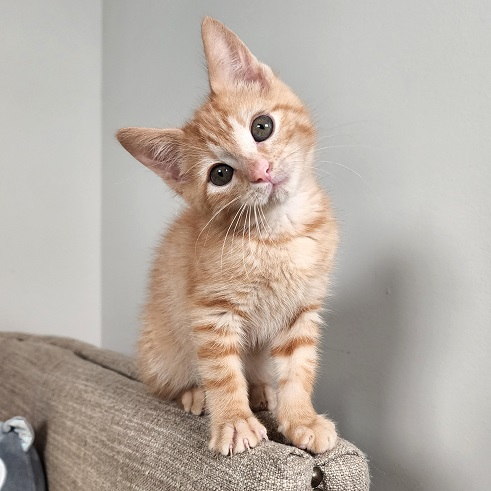
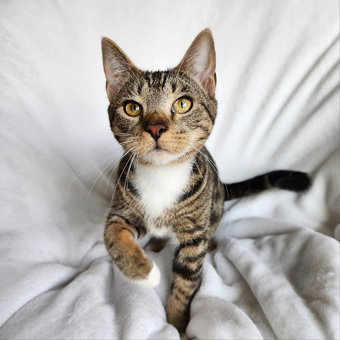

<div class="mainContainer">
  <mat-tab-group class="tabGroup" #tabGroup>
    <mat-tab label="Mission" class="tab">
      
      <div class="textContainer scrollEnabled" (swipeleft)="navigate(true)" (swiperight)="navigate(false)">
        <div class="textBlock bodyContents">
          <div class="subTitle">Dedication</div>
          At The Kitten Rescue Project, we are dedicated to saving the lives of kittens and neonates in need, with the
          ultimate goal of finding them forever homes. We rescue abandoned, orphaned, and sick kittens and work
          tirelessly to provide them with the care, nutrition, and socialization they require to grow and develop.
        </div>
        <div class="bodyContents">
          <div class="subTitle">Your Support</div>
          We call upon all animal lovers to join us in our mission to rescue, rehabilitate, and rehome orphaned kittens.
          Whether you can offer your time, your resources, or your support, your contribution can make a difference in
          the lives of these vulnerable creatures. Together, we can make a world where every kitten has a chance to grow
          up happy and healthy.
        </div>
      </div>
    </mat-tab>
    <mat-tab label="Vision" class="tab">
       1 " class="picture animate__animated animate__zoomIn scrollEnabled"
        src="../../../../assets/images/eliza.jpg" alt="cute kitten" (swipeleft)="navigate(true)"
        (swiperight)="navigate(false)">
      <div class="textContainer scrollEnabled" (swipeleft)="navigate(true)" (swiperight)="navigate(false)">
        <div class="textBlock bodyContents">
          <div class="subTitle">A Chance To Thrive</div>
          Our vision at The Kitten Rescue Project is a world where every orphaned kitten and neonate has the chance to
          thrive and find their forever home. We believe that no kitten should be left to suffer or die alone, and that
          every kitten deserves love, care, and protection.
        </div>
        <div class="bodyContents">
          <div class="subTitle">No Longer Overlooked</div>
          We envision a future where orphaned kittens and neonates are no longer overlooked or forgotten due to lack of
          resources, but are instead given a chance to survive. We are committed to working towards this vision every
          day, and invite you to join us in making a difference in the lives of orphaned kittens everywhere.
        </div>
      </div>
      
    </mat-tab>
    <mat-tab label="History" class="tab">
      <div class="centerContainer">
        
        <div class="textContainerColumn scrollEnabled" (swipeleft)="navigate(true)" (swiperight)="navigate(false)">
          <div class="textBlock bodyContents">
            <div class="subTitle">A Furball Named Butters</div>
            Our story began with a tiny orange-and-white kitten named Butters, born in the most unexpected of places:
            a bathtub. His mother was a stray cat who had found her way to a kindhearted rescuer just in time. Safe
            indoors and finally cared for, she gave birth to five kittens. With help, warmth, and a little luck, she
            raised her babies until they were ready to begin lives of their own.
          </div>
          <div class="textBlock bodyContents">
            <div class="subTitle">The Moment Everything Changed</div>
            When Jennifer first heard about the litter, one kitten stood out right away. Butters was small, scrappy,
            full of personality, and absolutely determined to be loved. From the moment she met him, he changed
            everything. He captured her heart, opened the door to the world of rescue, and sparked a lifelong passion
            for helping cats in need.
          </div>
          <div class="textBlock bodyContents">
            <div class="subTitle">Becoming A Foster</div>
            That passion grew into years of fostering kittens through COFAS, a rescue in Athens, Georgia. With every
            litter, Jennifer learned more, loved more, and became increasingly drawn to the kittens who needed the most
            urgent care: newborns, bottle babies, and underage kittens too young to survive without specialized support.
          </div>
          <div class="bodyContents">
            <div class="subTitle">The Kitten Rescue Project</div>
            That calling eventually led her to Atlanta, where she founded The Kitten Rescue Project. Today, The Kitten
            Rescue Project provides a safe haven for the tiniest and most vulnerable kittens. Through around-the-clock
            care, bottle feeding, careful monitoring, warmth, medical support, and socialization, these fragile babies
            are given the chance to grow, thrive, and become the cats they were always meant to be. What began with one
            beloved bathtub-born kitten has grown into a mission to give countless others the same chance at safety,
            love, and a future of their own. Every kitten's journey is different, but each one begins with the same
            promise: to help them find their way home, one paw at a time.
          </div>
        </div>
      </div>
    </mat-tab>
  </mat-tab-group>
</div>